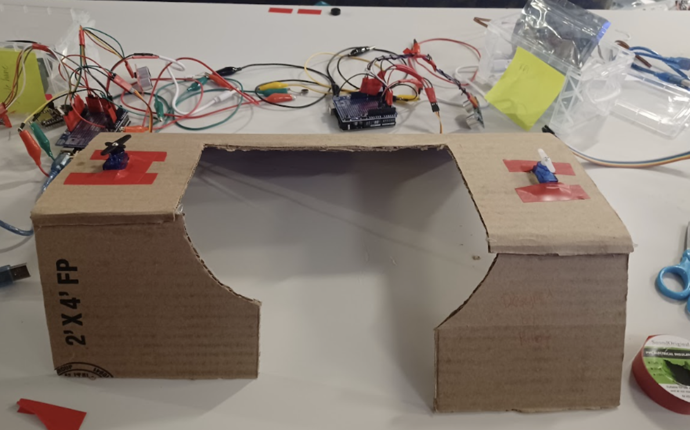
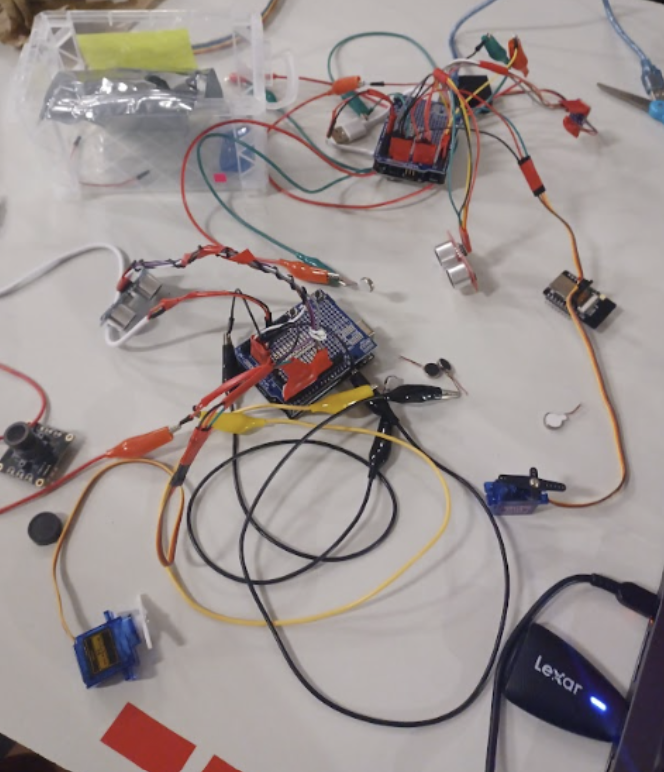
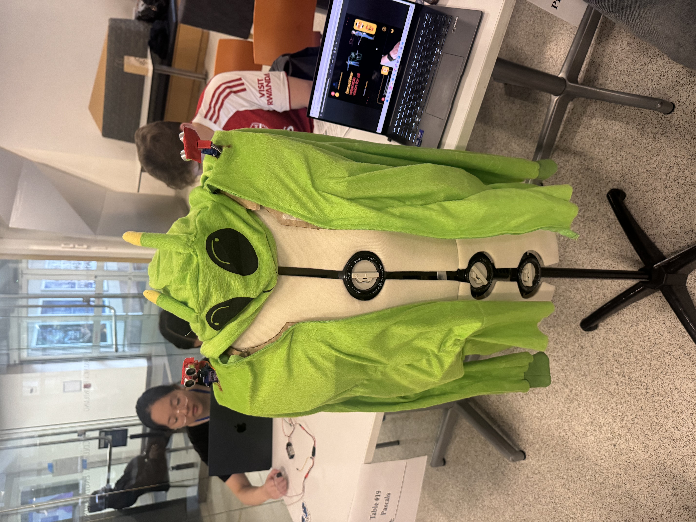

Role: Team member
Duration: 48 hours - Hardware Hackathon
Images
(Click on image to expand)

The cardboard frame that was used to support the motors.

The motors are connected to the Arduino.The motors are connected to the Arduino and situated on the cardboard frame.

The green alien jacket was added to make the device comfortable and fashionable!